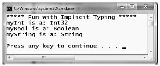

Up until this point in the chapter, when we have been defining local variables, we've explicitly specified the underlying data type of said variable.
static void DeclareExplicitVars() { // Explicitly typed local variables // are declared as follows: // dataType variableName = initialValue; int myInt = 0; bool myBool = true; string myString = "Time, marches on..."; }
While it is always good practice to explicitly specify the data type of each variable, the C# language does provide for implicitly typing of local variables using the var keyword. The var keyword can be used in place of specifying a specific data type (such as int, bool, or string). When you do so, the compiler will automatically infer the underlying data type based on the initial value used to initialize the local data point.
To illustrate the role of implicit typing, create a new Console Application project named ImplicitlyTypedLocalVars. Notice how the local variables within the previous method can now be declared as follows:
static void DeclareImplicitVars() { // Implicitly typed local variables // are declared as follows: // var variableName = initialValue; var myInt = 0; var myBool = true; var myString = "Time, marches on..."; }
Note Strictly speaking, var is not a C# keyword. It is permissible to declare variables, parameters, and fields named "var" without compile-time errors. However, when the var token is used as a data type, it is contextually treated as a keyword by the compiler. For simplicity, I will use the term "var keyword," rather than the more cumbersome "contextual var token."
In this case, the compiler is able to infer, given the initially assigned value, that myInt is, in fact, a System.Int32, myBool is a System.Boolean, and myString is indeed of type System.String. You can verify this by printing out the type name via reflection. Reflection is the act of determining the composition of a type at runtime. For example, using reflection, you can determine the data type of an implicitly typed local variable. Update your method with the following code statements:
static void DeclareImplicitVars() { // Implicitly typed local variables. var myInt = 0; var myBool = true; var myString = "Time, marches on..."; // Print out the underlying type. Console.WriteLine("myInt is a: {0}", myInt.GetType().Name); Console.WriteLine("myBool is a: {0}", myBool.GetType().Name); Console.WriteLine("myString is a: {0}", myString.GetType().Name); }
Note Be aware that you can use this implicit typing for any type including arrays, generic types (see Chapter 10), and your own custom types. You'll see other examples of implicit typing over the course of this book.
If you were to call the DeclareImplicitVars() method from within Main(), you'd find the output shown in Figure 3-17.
Figure 3-17 Reflecting over implicitly defined local variables
There are, of course, various restrictions regarding the use of the var keyword. First and foremost, implicit typing applies only to local variables in a method or property scope. It is illegal to use the var keyword to define return values, parameters, or field data of a custom type. For example, the following class definition will result in various compile-time errors:
class ThisWillNeverCompile { // Error! var cannot be used as field data! private var myInt = 10; // Error! var cannot be used as a return value // or parameter type! public var MyMethod(var x, var y){} }
Also, local variables declared with the var keyword must be assigned an initial value at the exact time of declaration and cannot be assigned the initial value of null. This last restriction should make sense, given that the compiler cannot infer what sort of type in memory the variable would be pointing to based only on null.
// Error! Must assign a value! var myData; // Error! Must assign value at exact time of declaration! var myInt; myInt = 0; // Error! Can't assign null as initial value! var myObj = null;
It is permissible, however, to assign an inferred local variable to null after its initial assignment (provided it is a reference type).
// OK, is SportsCar is a reference type! var myCar = new SportsCar(); myCar = null;
Furthermore, it is permissible to assign the value of an implicitly typed local variable to the value of other variables, implicitly typed or not.
// Also OK! var myInt = 0; var anotherInt = myInt; string myString = "Wake up!"; var myData = myString;
Also, it is permissible to return an implicitly typed local variable to the caller, provided the method return type is the same underlying type as the var-defined data point.
static int GetAnInt() { var retVal = 9; return retVal; }
Last but not least, be aware that it is illegal to define a nullable implicitly typed local variable using the C# ? token (see Chapter 4 for details on nullable data types).
// Nope, can't define nullable implicit variables, // as implicit variables can never be initially assigned // null to begin with! var? nope = new SportsCar(); var? stillNo = 12; var? noWay = null;
Be very aware that implicit typing of local variables results in strongly typed data. Therefore, use of the var keyword is not the same technique used with scripting languages (such as JavaScript or Perl) or the COM Variant data type, where a variable can hold values of different types over its lifetime in a program (often termed dynamic typing).
Note .NET 4.0 does allow for dynamic typing in C# using a new keyword called�surprise, surprise�dynamic. You will learn about this aspect of the language in Chapter 18.
Rather, type inference keeps the strongly typed aspect of the C# language and affects only the declaration of variables at compile time. After that, the data point is treated as if it were declared with that type; assigning a value of a different type into that variable will result in a compile-time error.
static void ImplicitTypingIsStrongTyping() { // The compiler knows "s" is a System.String. var s = "This variable can only hold string data!"; s = "This is fine..."; // Can invoke any member of the underlying type. string upper = s.ToUpper(); // Error! Can't assign numerical data to a string! s = 44; }
Now that you have seen the syntax used to declare implicitly typed local variables, I am sure you are wondering when to make use of this construct? First and foremost, using var to declare local variables simply for the sake of doing so really brings little to the table. Doing so can be confusing to others reading your code, as it becomes harder to quickly determine the underlying data type and therefore more difficult to understand the overall functionality of the variable. So if you know you need an int, declare an int!
However, as you will see beginning in Chapter 13, the LINQ technology set makes use of query expressions that can yield dynamically created result sets based on the format of the query itself. In these cases, implicit typing is extremely helpful, as we do not need to explicitly define the type that a query may return, which in some cases would be literally impossible to do. Without getting hung up on the following LINQ example code, see if you can figure out the underlying data type of subset:
static void QueryOverInts() { int[] numbers = { 10, 20, 30, 40, 1, 2, 3, 8 }; // LINQ query! var subset = from i in numbers where i < 10 select i; Console.Write("Values in subset: "); foreach (var i in subset) { Console.Write("{0} ", i); } Console.WriteLine(); // Hmm...what type is subset? Console.WriteLine("subset is a: {0}", subset.GetType().Name); Console.WriteLine("subset is defined in: {0}", subset.GetType().Namespace); }
I'll let the interested reader verify the underlying data type of subset by executing the preceding code (and it is not an array of integers!). In any case, it should be clear that implicit typing does have its place within the LINQ technology set. In fact, it could be argued that the only time one would make use of the var keyword is when defining data returned from a LINQ query. Remember, if you know you need an int, just declare an int! Overuse of implicit typing (via the var keyword) is considered bad style in production code.
Source Code The ImplicitlyTypedLocalVars project can be found under the Chapter 3 subdirectory.